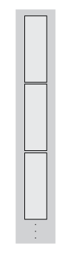

matlab.tall.transform
Transform array by applying function handle to blocks of data
Syntax
Description
[
, where tA,tB,...] = matlab.tall.transform(fcn,tX,tY,...)fcn is a function that returns multiple outputs, returns arrays
tA,tB,..., each corresponding to one of the output arguments of
fcn. All outputs of fcn must have the same height,
and the number of outputs must be the same as the number that are requested from
matlab.tall.transform.
Examples
Use matlab.tall.transform to build a tall array of zeros with attributes similar to another array.
Create a tall table for the airlinesmall.csv data set. The data contains information about arrival and departure times of US flights. Extract the ArrDelay variable, which is a vector of arrival delays.
ds = tabularTextDatastore('airlinesmall.csv','TreatAsMissing','NA'); ds.SelectedVariableNames = {'ArrDelay' 'DepDelay'}; tt = tall(ds); tX = tt.ArrDelay
tX =
M×1 tall double column vector
8
8
21
13
4
59
3
11
:
:
Write an anonymous function that creates an array of zeros with the same size and data type as the input.
zerosLike = @(in) zeros(size(in),'like',in);Use matlab.tall.transform to apply the zerosLike function to the vector of arrival delays. The result is a tall vector of the same size, but whose values are all zero.
s = matlab.tall.transform(zerosLike, tX)
s =
M×1 tall double column vector
0
0
0
0
0
0
0
0
:
:
Calculate the mean total flight delay from vectors of arrival and departure delays.
Create a tall table for the airlinesmall.csv data set. The data contains information about arrival and departure times of US flights. Extract the ArrDelay and DepDelay variables, which are vectors of arrival and departure delays.
ds = tabularTextDatastore('airlinesmall.csv','TreatAsMissing','NA'); ds.SelectedVariableNames = {'ArrDelay' 'DepDelay'}; tt = tall(ds); tX = tt.ArrDelay; tY = tt.DepDelay;
The meanDelay function concatenates the input vectors into a matrix, sums the values in each row (ignoring NaNs), and then it calculates the mean. Display the contents of that function file.
type meanDelayfunction D = meanDelay(a,b) X = [a b]; Y = sum(X,2,'omitnan'); D = mean(Y); end
Use matlab.tall.transform to apply the meanDelay function to each block of data in tX and tY. The result is the mean total delay in each block of data.
d = matlab.tall.transform(@meanDelay, tX, tY)
d = 7×1 tall double column vector 14.0621 11.1639 17.2311 15.1852 12.5860 19.8596 14.4036
This operation assumes that the result of reducing each block of data to a scalar value can fit in memory. For extremely large data sets and data sets that use a small block size, that assumption might not be true.
Find the maximum value and the index of that value in each row of data.
Create a tall table for the airlinesmall.csv data set. The data contains information about arrival and departure times of US flights. Extract the ArrDelay and DepDelay variables, which are vectors of arrival and departure delays.
ds = tabularTextDatastore('airlinesmall.csv','TreatAsMissing','NA'); ds.SelectedVariableNames = {'ArrDelay' 'DepDelay'}; tt = tall(ds); tX = tt.ArrDelay; tY = tt.DepDelay;
The maxDelay function concatenates the input vectors, and then it finds the maximum arrival or departure delay duration and its column index. Display the contents of that file.
type maxDelayfunction [M,I] = maxDelay(A,B) X = [A B]; [M,I] = max(X,[],2); end
Use matlab.tall.transform to apply the maxDelay function to each block of data in tX and tY. The result is the maximum arrival or departure delay for each row of data, as well as an index vector indicating which column the maximum value came from. An index of 1 indicates that the arrival delay in that row is larger, and an index of 2 indicates that the departure delay is larger.
[M, idx] = matlab.tall.transform(@maxDelay, tX, tY)
M =
M×1 tall double column vector
12
8
21
13
4
63
3
11
:
:
idx =
M×1 tall double column vector
2
1
1
1
1
2
1
1
:
:
Use the 'OutputsLike' option to return a table from matlab.tall.transform that has different variables from the input table.
Create a tall table with two variables of random values.
T = tall(table(rand(1e6,1),rand(1e6,1)))
T =
1,000,000×2 tall table
Var1 Var2
_______ _______
0.81472 0.90399
0.90579 0.94095
0.12699 0.80252
0.91338 0.24205
0.63236 0.97566
0.09754 0.31723
0.2785 0.81279
0.54688 0.69743
: :
: :
The function tableDiff calculates the difference between two input table variables and adds the result as a new variable in the table. Display the contents of the file.
type tableDifffunction Tout = tableDiff(Tin) d = Tin.Var2 - Tin.Var1; Tin.Var3 = abs(d); Tout = Tin; end
Use matlab.tall.transform to apply the tableDiff function to each block of data in T. Since the output table has different variables from the input table, use the 'OutputsLike' name-value pair to supply a prototype table with similar variables as the output (three variables with the default names Var1, Var2, and Var3).
Z = matlab.tall.transform(@tableDiff, T, 'OutputsLike', {table(1,1,1)})Z =
M×3 tall table
Var1 Var2 Var3
_______ _______ ________
0.81472 0.90399 0.089267
0.90579 0.94095 0.035156
0.12699 0.80252 0.67553
0.91338 0.24205 0.67133
0.63236 0.97566 0.3433
0.09754 0.31723 0.21969
0.2785 0.81279 0.53429
0.54688 0.69743 0.15054
: : :
: : :
Input Arguments
Transform function to apply, specified as a function handle or anonymous function.
Each output of fcn must be the same type as the first input
tX. You can use the 'OutputsLike' option to
return outputs of different data types. If fcn returns more than one
output, then the outputs must all have the same height.
The general functional signature of fcn is
[a, b, c, ...] = fcn(x, y, z, ...)
fcn must satisfy these requirements:
Input Arguments — The inputs
[x, y, z, ...]are blocks of data that fit in memory. The blocks are produced by extracting data from the respective tall array inputs[tX, tY, tZ, ...]. The inputs[x, y, z, ...]satisfy these properties:All of
[x, y, z, ...]have the same size in the first dimension after any allowed expansion.The blocks of data in
[x, y, z, ...]come from the same index in the tall dimension, assuming the tall array is nonsingleton in the tall dimension. For example, iftXandtYare nonsingleton in the tall dimension, then the first set of blocks might bex = tX(1:20000,:)andy = tY(1:20000,:).If the first dimension of any of
[tX, tY, tZ, ...]has a size of1, then the corresponding block[x, y, z, ...]consists of all the data in that tall array.
Output Arguments — The outputs
[a, b, c, ...]are blocks that fit in memory, to be sent to the respective outputs[tA, tB, tC, ...]. The outputs[a, b, c, ...]satisfy these properties:All of
[a, b, c, ...]must have the same size in the first dimension.All of
[a, b, c, ...]are vertically concatenated with the respective results of previous calls tofcn.All of
[a, b, c, ...]are sent to the same index in the first dimension in their respective destination output arrays.
Functional Rules —
fcnmust satisfy the functional rule:F([inputs1; inputs2]) == [F(inputs1); F(inputs2)]: Applying the function to the concatenation of the inputs should be the same as applying the function to the inputs separately and then concatenating the results.
Empty Inputs — Ensure that
fcncan handle an input that has a height of 0. Empty inputs can occur when a file is empty or if you have done a lot of filtering on the data.
For example, this function accepts two input arrays, squares them, and returns two output arrays:
function [xx,yy] = sqInputs(x,y) xx = x.^2; yy = y.^2; end
tX and tY with this
command:[tA,tB] = matlab.tall.transform(@sqInputs,tX,tY)
Example: tA = matlab.tall.transform(@(x) x .* 2, tX) specifies an
anonymous function to multiply the values in tX by 2.
Example: tC = matlab.tall.transform(@plus,tX,tY) specifies a
function handle @plus to add two arrays together.
Data Types: function_handle
Input arrays, specified as scalars, vectors, matrices, or multidimensional arrays.
The input arrays are used as inputs to the specified function fcn.
Each input array tX,tY,... must have compatible heights. Two inputs
have compatible height when they have the same height, or when one input is of height
one.
Prototype of output arrays, specified as arrays. When you specify
'OutputsLike', the output arrays tA,tB,...
returned by matlab.tall.transform have the same data types as the
specified arrays {PA,PB,...}.
Example: tA =
matlab.tall.transform(fcn,tX,'OutputsLike',{int8(1)});, where
tX is a double-precision array, returns A as
int8 instead of double.
Output Arguments
Output arrays, returned as scalars, vectors, matrices, or multidimensional arrays.
If any input to matlab.tall.transform is tall, then all output
arguments are also tall. Otherwise, all output arguments are in-memory arrays.
The size and data type of the output arrays depend on the specified function
fcn. In general, the outputs tA,tB,... must all
have the same data type as the first input X. However, you can
specify 'OutputsLike' to return different data types. The output
arrays tA,tB,... all have the same height.
More About
When you create a tall array from a datastore, the underlying datastore
facilitates the movement of data during a calculation. The data moves in discrete pieces
called blocks or chunks, where each block is a set
of consecutive rows that can fit in memory. For example, one block of a 2-D array (such as a
table) is X(n:m,:), for some subscripts n and
m. The size of each block is based on the value of the
ReadSize property of the datastore, but the block might not be exactly
that size. For the purposes of matlab.tall.transform, a tall array is
considered to be the vertical concatenation of many such blocks:

For example, if you use the sum function as the transform function,
the result is the sum per block. Therefore, instead of returning a
single scalar value for the sum of the elements, the result is a vector with length equal to
the number of
blocks.
ds = tabularTextDatastore('airlinesmall.csv','TreatAsMissing','NA'); ds.SelectedVariableNames = {'ArrDelay' 'DepDelay'}; tt = tall(ds); tX = tt.ArrDelay; f = @(x) sum(x,'omitnan'); s = matlab.tall.transform(f, tX); s = gather(s)
s =
140467
101065
164355
135920
111182
186274
21321Version History
Introduced in R2018b